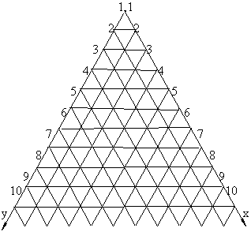
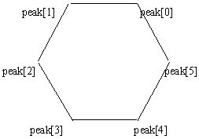

| 大家好！《请你编程》又与你们见面了。《请你编程》得到了广大朋友的关心和支持，我们在这里表示衷心的感谢。《请你编程》是一个读者朋友直接参与的栏目，是一个体现自我的园地，希望有编程愿望的朋友，无论是编程高手，还是初学者都能参与进来，我们将会认真对待每一份作品。下面请看本期北京读者叶立超的程序。
9910请你编程解题思路
1．建立如图1所示标系。对于给定的每一个点都有唯一的一组坐标，比如点1、2、3。

4、5、6、7的坐标分别是（1，1）、（1，2）、（2，1）、（1，3）、（2，2）、（3，1）、（1，4）。
在该坐标系下每个点的x值等于其序号和其所在水平行前一行的最后一个点的序号之差，每一水平行线上的点的x值和y值之和等于所在行数加1。另外在每一组数中找出满足如下条件的六个顶点，其中第一个顶点peak[0]的y值最小并且x＋y值最小，第二个顶点peak[1]的x值最小并且x＋y值最小，第三个顶点peak[2]的x值最小并且y值最大，第四个顶点peak[3]的y大值最并且x＋y值最大，第五个顶点peak[4]的x值最大并且x＋y值最大，第六个顶点peak[5]的x值最大并且y值最小。当没有重合时，这六个点的相对位置如图2所示。
2．判断这六个顶点构成的多边形是否为正多边形。当这六个点的相邻的点之间的连线均平行于x轴或y轴 或水平行线，并且这些连线中不为零的都相等时，如果这六个顶点不在一条直线上则其构成的多边形是满足要
求的正六边形或正四边形（其中两条边为零时）、或正三边形（其中三条边为零时）。
3．最后判断这一组数中的每一个点是否都在这个正多边形的边上，满足这一条件的一组数就为正确结果。 源程序

＃include <math.h>
＃include <stdio.h>
／＊用于保存坐标的结构＊／
struct Coord
{int x;
int y;};
／＊将从文本中读取的点的号码dail转变为当前坐标系下的坐标并保存在point指向的坐标结构中＊／
void GetCoord(struct Coord ＊point,int dail);／＊将满足顶点条件的点的坐标存入数组peak中＊／
void SetPeak(struct Coord peak[],struct Coord ＊point);
／＊判断数组peak中的点是否构成正多边形＊／
int Polygon(struct Coord peak[]);
main()
{int i,j; ／＊循环控制变量＊／
int linage;／＊记录文本中待处理的数的行数＊／
int dail; ／＊接收从文本中读取的号码＊／
int sum; ／＊一行中点的总数＊／
int flag; ／＊标志变量＊／
struct Coord point[6];／＊用于保存一行中每个点的坐标的数组＊／
struct Coord peak[6];／＊用于保存六个顶点坐标的数组＊／
FILE ＊fp;
if((fp=fopen(″pyramid.txt″,″r″))==NULL)／＊打开文本＊／
{printf(″Can not open the ′pyramid.txt′ file!″);
exit(0);}
else
printf(″The result is:\n″);
fscanf(fp,″％d″,＆linage); ／＊读取行数＊／
<linage;i＋＋) ／＊每次循环处理一行＊／> for(i=0;ibr> {fscanf(fp,″％d″,＆dail);／＊读取行中的第一个数＊／
GetCoord(＆point[0],dail); ／＊转换为坐标＊／
for(j=0;j<6;j＋＋) ／＊初始化顶点坐标＊／
peak[j]=point[0]; ／＊都设置为第一个点的坐标＊／
for(j=1;fgetc(fp)!='\n'＆＆j<6;j＋＋) ／＊处理一行数据＊／
{fscanf(fp,″％d″,＆dail); ／＊读取一个号码＊／
GetCoord(＆point[j],dail); ／＊转换为坐标＊／
SetPeak(peak,＆point[j]); ／＊将满足顶点条件的点的坐标存入数组peak中＊／}
sum=j;／＊记录该行的点的总数＊／
flag=Ploygon(peak); ／＊判断数组peak中的点是否构成正多边形＊／
<sum＆＆flag;j＋＋) ／＊进一步判断该行中每一个点是否都在这个正多边形的边上＊／> for(j=0;jbr> {if(point[j].y!=peak[0].y＆＆
point[j].y!=peak[2].y＆＆
point[j].x!=peak[2].x＆＆
point[j].x!=peak[4].x＆＆
point[j].x＋point[j].y!=peak[0].x＋peak[0].y＆＆
point[j].x＋point[j].y!=peak[4].x＋peak[4].y)
flag=0;}
if(flag) ／＊根据标志变量输出结果＊／
printf(″TRUE\n″);
else
printf(″FALSE\n″);}}
／＊将从文本中读得的序号dail转变为当前坐标系下的坐标并保存在point指向的坐标结构中＊／
void GetCoord(struct Coord ＊point,int dail)
{int line; ／＊当前行的点的总数＊／
int span; ／＊所给点和上一行最后一个点的序号差＊／
line=1; ／＊从第一行开始＊／
span=dail;
while(span>line) ／＊所给点和上行最后一个点的序号差大于当前行的点的总数＊／
{span－=line; ／＊序号差减去当前行的点的总数＊／
line＋＋; ／＊当前行下移一行＊／}
point－>x=span; ／＊所给点的x值等于其和前一行最后一个点的序号差＊／
point－>y=(line＋1)－span; ／＊x值和y值之和等于所在行数加1＊／}
／＊将满足顶点条件的点的坐标存入数组peak中＊／
void SetPeak(struct Coord ＊peak,struct Coord ＊point)
{if(point－>y<=peak[0].y＆＆(point－>x＋point－>y)<=(peak[0].x＋peak[0].y))
peak[0]=＊point; ／＊第一个顶点的y值最小并且x＋y值最小＊／
if(point－>x<=peak[1].x＆＆(point－>x＋point－>y)<=(peak[1].x＋peak[1].y))
peak[1]=＊point; ／＊第二个顶点的x值最小并且x＋y值最小＊／
if(point－>x<=peak[2].x＆＆point－>y>=peak[2].y)
peak[2]=＊point; ／＊第三个顶点的x值最小并且y值最大＊／
if(point－>y>=peak[3].y＆＆(point－>x＋point－>y)>=(peak[3].x＋peak[3].y))
peak[3]=＊point; ／＊第四个顶点的y大值最并且x＋y值最大＊／
if(point－>x>=peak[4].x＆＆(point－>x＋point－>y)>=(peak[3].x＋peak[3].y))
peak[4]=＊point; ／＊第五个顶点的x值最大并且x＋y值最大＊／
if(point－>x>=peak[5].x＆＆point－>y<=peak[5].y)
peak[5]=＊point; ／＊第六个顶点的x值最大并且y值最小＊／}
／＊判断数组peak中的点是否构成正多边形＊／
int Ploygon(struct Coord ＊peak)
{int i; ／＊循环控制变量＊／
int sidelen[6]; ／＊用于保存六条边长的数组sidelen＊／
／＊各边必须平行于x轴或y轴或直线x＋y=常数＊／
if(peak[0].x＋peak[0].y!=peak[1].x＋peak[1].y||
peak[1].x!=peak[2].x||
peak[2].y!=peak[3].y||
peak[3].x＋peak[3].y!=peak[4].x＋peak[4].y||
peak[4].x!=peak[5].x||
peak[5].y!=peak[0].y)
return 0;
／＊求各条边长并存入数组sidelen中＊／
for(i=0;i<6;i＋＋)
if(i==2)
sidelen[i]=fabs(peak[i＋1].x－peak[i].x);
else if(i==5)
sidelen[i]=fabs(peak[0].x－peak[i].x);
else
sidelen[i]=fabs(peak[i＋1].y－peak[i].y);
／＊两条相邻的边同时为零时各顶点在一条直线上，不能构成多边形＊／
for(i=0;i<5;i＋＋)
if(sidelen[i]==0＆＆sidelen[i＋1]==0)
return 0;
／＊第一条边不为零时，若某边不为零并和第一条边长不相等，则不为正多边形＊／
if(sidelen[0])
{for(i=1;i<6;i＋＋)
if(sidelen[i]＆＆sidelen[i]!=sidelen[0])
return 0;}／＊第一条边为零时，若某边不为零并和第二条边长不相等，则不为正多边形＊／
else
for(i=2;i<6;i＋＋)
if(sidelen[i]＆＆sidelen[i]!=sidelen[1])
return 0;
return 1;}
9912请你编程题目
在PopPush这个城市里，有一个非常著名的火车站。由于修建年代久远，这个车站只有一根轨道。而且，该车站又是终点站，所以火车进入和离开车站都依靠这个轨道，且只能从一端进出。该城市正是因此而得名。
但这样一来，出现了一个很奇特的现象：如果有1、2、3这三列火车将先后进入车站，则火车出站的各种排列中不可能出现3、1、2。因为如果3是第一个进站的火车，说明1和2都已进站了。而2比1晚进车站，所以如果2还未出站的话，1不可能出站。但是，出站的各种排列中有可能出现1、2、3，即1进站后在2进站之前就已出站，2在3进站之前也出了站。
程序要求如下：
1．输入数据从文本文件rails.txt中读取。输入数据文件格式为：输入数据中又包含若干组；每一组的第一行为一个整数N，表示有N辆火车，N<=1000。以下每一行表示火车出站的排列顺序，用0来表示这组的结束；若N=0，则表示输入结束。
2．若这种排列可能出现，则输出Yes，反之，输出No；每一组数据要空一行。
注：排列序列中的1、2、3、4...表示在这些火车进站之前，它们的先后顺序。
输入数据范例：
5
1 2 3 4 5
5 4 1 2 3
0
6
6 5 4 3 2 1
0
0
输出数据范例：
Yes
No
本期题目由上海的卜天明提供。
来稿请寄磁盘稿或用E－mail（software@cpcw.com）投稿，请写明解题思路和源程序（包含详细的注解），寄到电脑报编辑部的收信地址或E－mail信箱。来稿截止日期：2000年1月15日。
本期获奖者名单
（广西 陈行辉 ） （福建 蔡一鸣）
（湖北 文峰） （天津 贾承欢）
（山东 周文英） （重庆 王建）
（北京 骆德全） （浙江 贺伟国）
（上海 王卫国） （浙江 刘静）
每位获奖者将获得苦丁香公司提供的光盘一张。
|